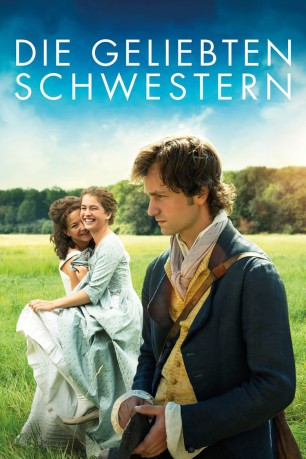

#7230 Die Geliebten Schwestern
 
 IMDB-Wertung: 6.1 / 10
IMDB-Wertung: 6.1 / 10  Metascore: 0
Metascore: 0 
Einen heißen Sommer lang ringen zwei Schwestern um einen Mann, den beide lieben: Die schöne Caroline von Beulwitz ist unglücklich verheiratet, sehnt sich nach Liebe und Leben. Charlotte von Lengefeld, ihre schüchterne Schwester, träumt von einem Gatten. Sie sind ein Herz und eine Seele, auch dann noch, als Friedrich Schiller in ihr beider Leben tritt…
Jahr: 2014
Dauer: 138 Minuten
FSK: 6
Land: Deutschland Studio: Senator FilmTonspuren:
Untertitel:
Auflösung: 1080p (1920x1040) Größe: 7659 MB
Genre: Drama, Liebe, Geschichte
Regisseur: Dominik Graf
Drehbuch: Dominik Graf
Soundtrack:
Darsteller:
 Hannah Herzsprung als Caroline von Beulwitz
Hannah Herzsprung als Caroline von Beulwitz Florian Stetter als Friedrich Schiller
Florian Stetter als Friedrich Schiller Ronald Zehrfeld als Wilhelm von Wolzogen
Ronald Zehrfeld als Wilhelm von Wolzogen- Maja Maranow als Frau Charlotte von Stein
 Michael Wittenborn als Carl Ludwig von Knebel
Michael Wittenborn als Carl Ludwig von Knebel Andreas Pietschmann als Friedrich von Beulwitz
Andreas Pietschmann als Friedrich von Beulwitz- Anne Schäfer als Charlotte von Kalb
 Peter Schneider als Christian Gottfried Körner
Peter Schneider als Christian Gottfried Körner Götz Otto als Goethe
Götz Otto als Goethe- Henriette Confurius als Charlotte von Lengefeld
- Claudia Messner als Madame Louise von Lengefeld
- Elisabeth Wasserscheid als Schwenke
- Christine Zart als Haushälterin Stein
- Wolf Dietrich Rammler als Heinrich von Kalb
- Klaus Lehmann als Henry Heron
- Joachim Kappl als Friedrich von Stein
- Bernhard Conrad als Arzt, Jena
- Peter Rauch als Pedell
- Hans Bayer als Kutscher, Ludwigsburg
- Karlheinz Angermeyer als von Werthausen
- Birgit Euting als Schwester von Werthausen
- Horst-Peter Kirchner als Älterer Tänzer
- Ilse Bendin als Ältere Tänzerin
- Heinrich Cuipers als Arzt, Ludwigsburg
- Jörg-Uwe Schröder als Wolfgang Heribert von Dalberg
- Julischka Eichel als Louise Schiller
- Philipp Otto als Fürst v. Schwarzburg
- Ella Gaiser als Fürstin v. Schwarzburg
- Guenter Kurze als Vater von Beulwitz
- Frederike Schinzler als Junge Dame
- Eva-Maria Hofmann als Mutter Schiller
- Philipp Oehme als Diener Hans
- Michael Kleiber als Verlagsmitarbeiter
- Ulrich Blöcher als Cotta
- Enrico Sobetzko als Arzt, Weimar
- Bennet Meyer als Adolph Wolzogen
- Jörg Schneider als Goethe
- Rudolf Trommer als Schulmeister / Schillers Vermieter
- Thomas Kornack als Kutscher
- Julia Preuß als Dienstmädchen
- Tobias Walter als Vater Ertrinkendes Kind
- Liselotte Reinsberger als Ertrinkendes Kind
- Walter Patreider als Druckereibesitzer
- Reinhard Forcher als Pastor
- Linda Brodhag als Scharade Tänzer
- Katharina Klaßmann als Scharade Tänzer
- Hauke Martens als Scharade Tänzer
- Till Wohlfahrt als Karl Friedrich Schiller, neun Jahre
- Laurenz Billermann als Karl Friedrich Schiller, ein Jahr
- Finn Arne Kretzschmar als Ernst, sechs Jahre
Datei: X:\2014(G-M)\Geliebten Schwestern, Die (2014, FSK6, 1920x1040).mkv seit 09.10.2017
Festplatte: HD 2013(I-Z)-2014(A-Z)
 Es gibt insgesamt 136 Filme in der Gruppe '2014(G-M)'
Es gibt insgesamt 136 Filme in der Gruppe '2014(G-M)'